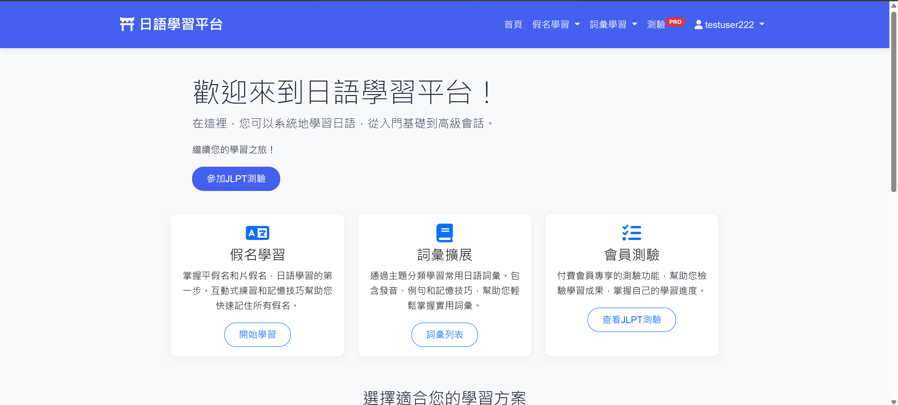
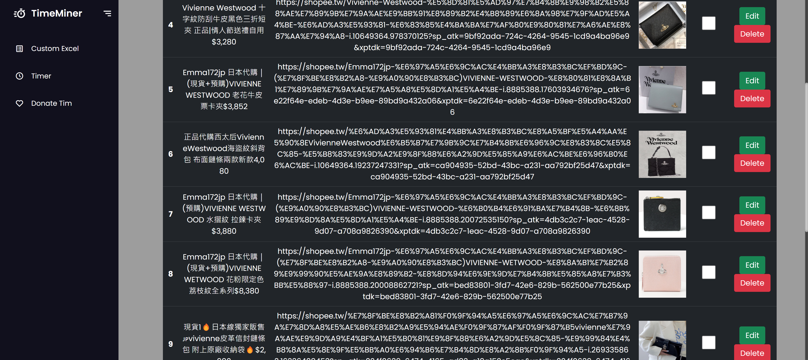
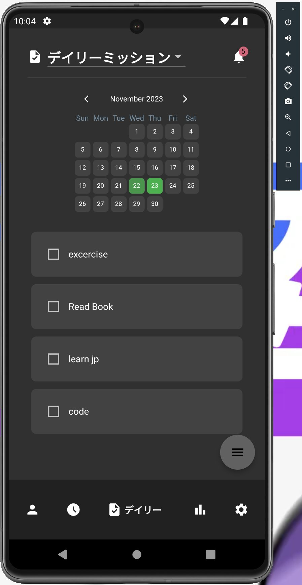
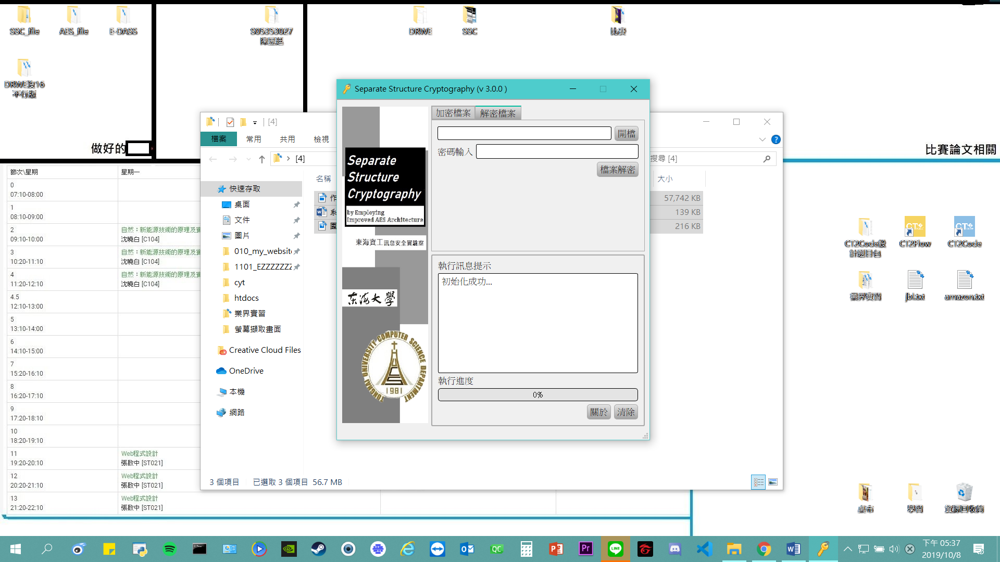
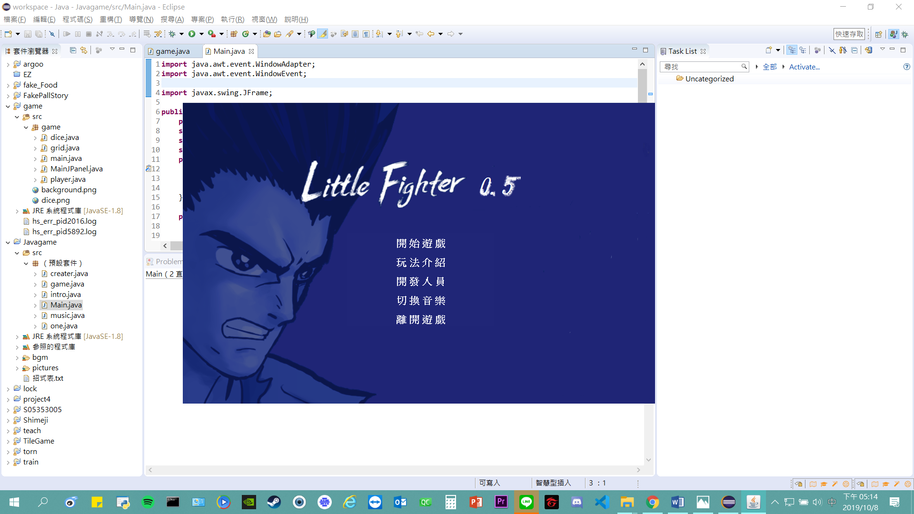
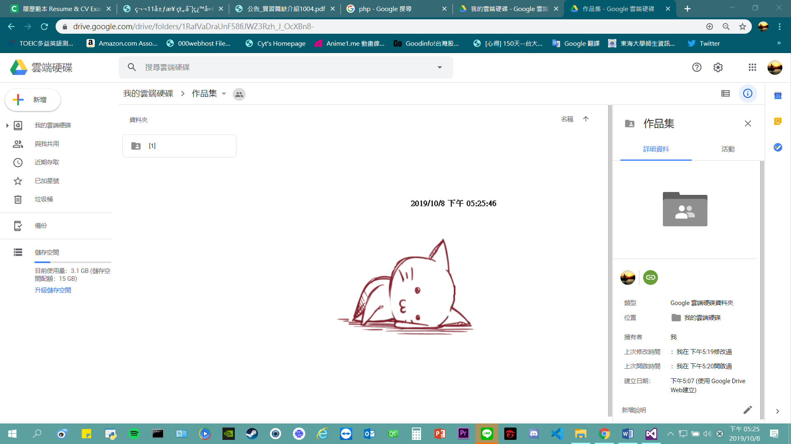

問題
Checksum 不一致造成多餘的 fallback
checksum 對不上時，系統會再打一次 fallback API。這類呼叫每天大約 75,000 次，但其中多數並不是真的需要。
行動
找出並修復 checksum 不一致，讓這些不必要的 fallback 不再發出。
結果
這類 fallback 的每日呼叫量從約 75,000 次降到少於 50 次。
指標是特定 fallback 的呼叫量，不是全系統錯誤率、營運成本或全部 API 流量。
Tim Chen
這些是去識別化的工作案例。沒有公開原始碼的項目不會放上 GitHub 按鈕。
問題
checksum 對不上時，系統會再打一次 fallback API。這類呼叫每天大約 75,000 次，但其中多數並不是真的需要。
行動
找出並修復 checksum 不一致，讓這些不必要的 fallback 不再發出。
結果
這類 fallback 的每日呼叫量從約 75,000 次降到少於 50 次。
指標是特定 fallback 的呼叫量，不是全系統錯誤率、營運成本或全部 API 流量。
問題
有些 API 的回應時間超過 2 秒，使用這些介面時會明顯等待。
行動
針對這些實際變慢的 API 做效能改善。
結果
改善後的回應時間大約是 200 毫秒。
只涵蓋實際改過的 API，不是所有 API，也不是整個平台。沒有提供 p95／p99、樣本量或測試條件。
問題
公告邏輯把計算和服務職責放在一起，時間也不易替換，站點資料彙整、時間區間合併和快取因此不好單獨驗證。
行動
把計算與服務分開、注入時間依賴，整理站點資料彙整、時間區間合併與快取，並補上測試。
結果
這段行為可以靠測試保護，之後重構比較不用靠手工回歸。同一時期，既有單元測試套件從 41 個增加到 240 個（2026-10-01 的總數），並修掉原本會失敗的測試。
240 是套件總數，不是從零新寫 240 個，也不是 coverage。這裡不公開 API 路徑、內部服務名或站點識別。
這些是以前的 side project 和學生作品，不是目前的代表成果。演示連結只保留目前還開得了的網站。

用 Python Flask 做的日文單字練習網站。

用 Azure 架的簡易 CRUD 網站。

用 Flutter 與 Firebase 做的自律練習 app，曾上架 Google Play。

大學專題的加解密系統，調整過既有 AES 流程，並和同學參加資訊應用競賽。

大一 Java 課的小遊戲作業。

大二做的桌面寵物。